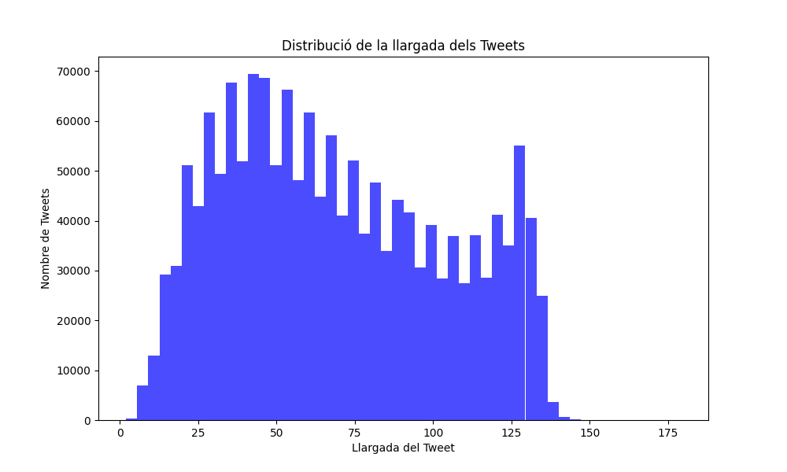
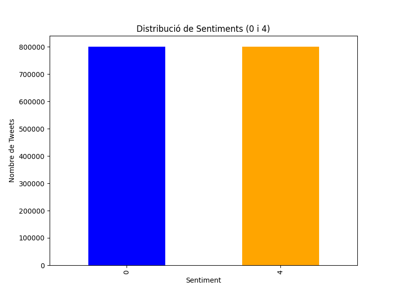
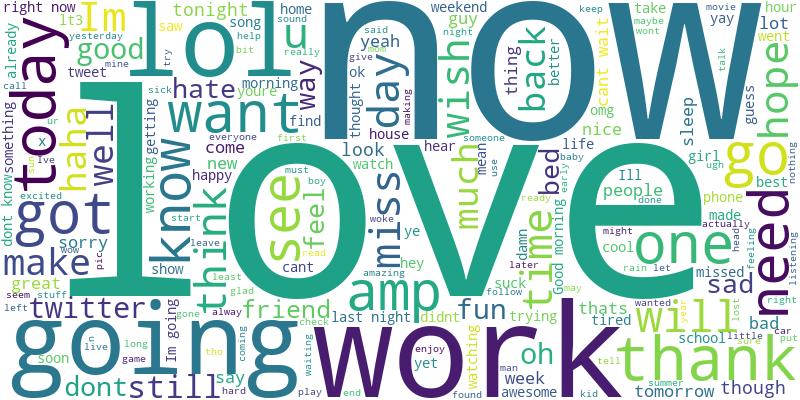

Informe del Dataset de Tweets
1. Descripció General
Total de registres: 1600000
Distribució de Sentiments:
- Sentiment 0: 800000
- Sentiment 4: 800000
2. Estadístiques dels Tweets
- Llargada mitjana: 69.2
- Llargada mínima: 2
- Llargada màxima: 179
- Desviació típica: 34.79
- Tweet més curt: is
- Tweet més llarg: BROOKE quotfrustratedquot quotpissyquot quotgrrrquot quotpissed offquot quotheadachequot quotnothing goes rightquot quotsickquot quottiredquot quotsadquot See a PATTERN emerging
3. Gràfiques


4. Nuvol de Paraules
